本章对常见的问题进行了分类，并通过现象的观察和一些检测方法，对问题进行定位，从而找出解决方法
视觉控制器开机原理为：主板上电正常-主板自检正常-系统及引导正常-进入系统
无法开机问题是绝大部分问题的反馈，占比高达75%。前场判断无法开机问题时，需要观察以下信息并做相应判断。可能导致的情况包括：黑屏，开机无反应，风扇无反应，无法进入BIOS界面，主板报警等。
此部分可观察的明显现象不多，以观察方法作为判断依据。
观察电源灯状态
可判断问题点：
电源模块问题
电源模块故障或硬件接口短路/无法识别（硬件损伤）
判断方法
上电后，电源灯power正常情况下会变为绿色，此时，
若电源灯是暗的(VC7200/7300)或橙色(VC7100)，按下开机按钮，若变绿，说明上电正常，BIOS中没有设置来电自启动。解决方法参考BIOS来电自启设置。
若电源灯是暗的，按开机键没有反应，检查供电部分线序是否正确。此步可更换适配器测试。
VC7100供电为19-24V，电源端子顺序 -++-
VC7200供电为9-36V，电源端子顺序为 GND - +
VC7300供电为18-25V，电源端子顺序为++–
若确认供电无问题，定位 电源模块问题，返厂维修。
若变绿后很快变暗，说明主板上电后触发短路保护，检查电源供电，若供电没问题，定位电源模块故障或硬件接口短路/无法识别（硬件损伤），返厂维修。
观察风扇
可判断问题点：
显示线缆连接导致的黑屏问题
VGA接口故障导致的黑屏问题
电源模块故障或硬件接口短路/无法识别（硬件损伤）
判断方法
VC7100和VC7200通过上面板的风扇进风口，用手感觉是否有风。
VC7300通过后面板风扇进风口判断是否有风。
若有风，且电源灯变绿，屏幕依旧无显示
更换VGA(参考前面板接口)线缆，检查显示器端是否接好，并调节显示器模式为VGA，或自动检测。若解决，定位显示线缆连接导致的黑屏问题
如果没有解决，7100更换DVI线缆(参考前面板接口)，7300换HDMI线缆插到对应接口，并调节显示器模式为对应模式。若解决，定位VGA接口故障导致的黑屏问题
若没风，主板没起来或无供电。检查供电后如还没有风，电源模块故障或硬件接口短路/无法识别（硬件损伤）返厂维修。
到此步，主板上电步骤完成。
观察开机报警音
可判断问题点：
主板故障，内存故障，显卡故障，CPU故障等
判断方法
正常会有滴的一声正常开机提示音，为主板自检提示音。
一般出现的问题情况是没有报警音或有规则的报警音。
无报警音，且视觉控制器无法开机的情况，关机后拔掉内存，重新开机，听是否有1长3短；注意，内存插拔的过程一定在关机状态下操作。
有报警音的情况，听报警音规律。5短为CPU故障，8短为显示故障，1长3短为内存故障。现场如果有散件，可做替换操作验证。如没有，返修。
如果提示音正常，但依旧无法开机，开机后一直不断按(非按住)DEL，看是否能进BIOS界面。只要能进BIOS界面，就过了主板自检。能进BIOS的情况，都不叫无法开机。BIOS界面参考下图。
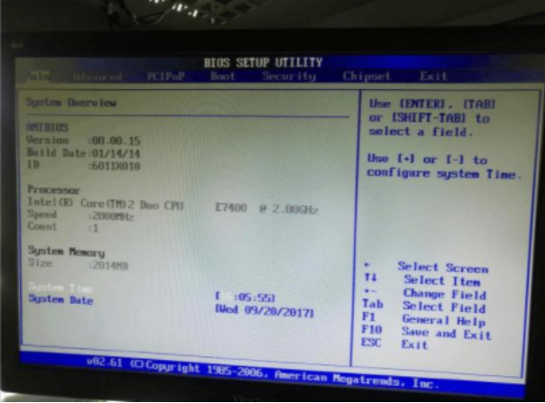
观察鼠标或键盘插上时的声音
正常鼠标或键盘插到USB口时，主板会有滴的一声。或者观察硬盘灯，最左面的会亮，或者可以切换开关状态。用此方法可判断主板是否已经自检到外设部分，外设部分为比较靠后的自检项，都能过说明主板除了显示模块，供电及自检是正常的。
无法进系统问题，除硬盘故障坏道属于硬件问题，部分蓝屏是内存问题，需要返厂维修外，其他问题都属于系统问题或BIOS设置问题。可以通过BIOS刷写，系统重装/还原等手段在现场解决。
此问题有比较明显的现象，以现象分析作为解决问题的依据。
现象描述：
无法进入系统，卡windows图标
无法进入系统，自动重启
无法进入系统，蓝屏
无法进入系统，黑屏有字符说明或左上角有不停闪烁的白色横杠
问题分析：
无法进入系统，卡windows图标：
可能原因包括外设问题、windows引导问题、驱动兼容性问题、系统崩溃问题及驱动兼容性问题。
无法进入系统，自动重启(未进系统前)：
可能原因包括硬盘坏道问题、windows引导问题、内存问题、驱动兼容性问题及系统崩溃问题、风扇不转导致的过热重启或死机问题。
无法进入系统，蓝屏：
可能原因包括内存问题、系统崩溃报错问题、驱动兼容性问题、进恢复模式问题。(此故障有报错信息，记录蓝屏报错代码并反馈给产品端，会有专用解决方法)
比如：
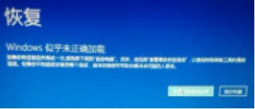 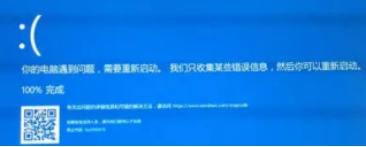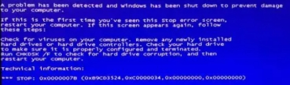
无法进入系统，黑屏有英文说明或左上角有不停闪烁的白色横杠：
大部分翻译为无法找到硬盘，无法找到引导，比如：
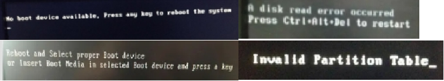
可能的原因包括硬盘无法识别问题、引导丢失问题。
解决方法：
解决方法的操作方式从易到难，从系统到硬件的顺序，按以下顺序尝试。
风扇问题：
用手在上面板感觉下风扇有没有转，如果没风，判断为风扇问题。部分重启问题由此引起。
时间评估：5s
外设问题：
拔掉所有USB设备后按开机键。
时间评估：5s
Windows引导问题：
进PE系统后，运行windows引导修复工具，点击确定，待成功后重启。
时间评估：1分钟
驱动兼容性问题：
出问题的一般是最近安装的驱动程序或显卡驱动，进入安全模式后，卸载显卡驱动或最近安装的驱动，重启。 时间评估：1分钟
系统崩溃问题：
还原系统或重装系统 时间评估：10-15分钟
内存问题：
取出内存后擦拭金手指，或更换好的内存测试。 时间评估：5分钟
硬盘坏道问题：
一般机械盘比较容易出现坏道问题，关机后打开机盖，拔掉机械硬盘线，开机看是否能进系统。如果能进，直接定位硬盘逻辑坏道问题。关机后插上硬盘线，开机后进入PE系统，打开diskgenius软件，选择磁盘-坏道修复-选择对应磁盘-开始检测，完成后点击尝试修复。其中，可以修复的部分为逻辑坏道，硬盘可以继续使用。这种坏道一般集中在扇区前部，检测约十分钟可暂停，尝试修复后重启。
不可以修复的部分为物理坏道，需要返修或更换好的机械盘。
固态系统盘如果出现坏块，一般是频繁的异常断电引起。如果出现还原系统后依旧卡顿或卡死重启，现场更换固态盘或送修。
所有的硬盘坏道/坏块问题，都可以通过更换硬盘来解决
时间评估：逻辑坏道15-20分钟，更换好的机械盘5分钟
黑屏类问题(仅针对能上电的机器，不能上电的请参考1. 无法开机问题)
硬盘或引导造成的黑屏
现象描述：
典型报错信息如下所示：
Primary master hard disk fail
Reboot and select proper boot device
Invalid system disk
A disk read error occurred
原因分析：
没有找到硬盘或系统引导有误
解决方法：
① 在BIOS中查看硬盘是否能够识别，以及首启动项是否为系统盘。
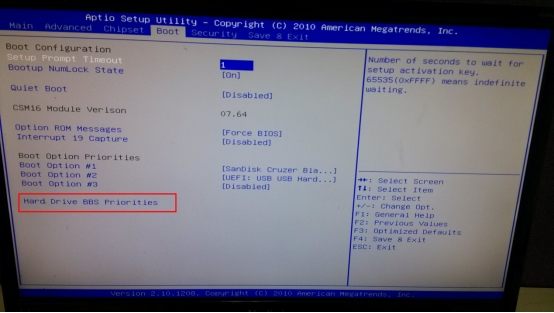
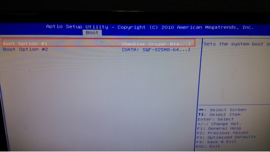
② 如果没找到硬盘，检查系统盘连接，关机后重新插拔后在尝试。如果还不行，更换硬盘。
③ 如果可以识别硬盘，选中后如果还不能进，进入PE系统，运行windows系统引导修复软件。
④ 如果还不行，还原系统。
显示模块故障或线缆/显示器设置造成的黑屏
现象描述：
① 视觉控制器开机后风扇转，电源正常
② 风扇最大风力转，主板无正常上电音，且无报警
③ 主板有正常上电音，插键盘有滴的响声，键盘灯亮
原因分析：
① 显示模块故障或主板故障
② 线缆/显示器设置问题
③ 分辨率问题
解决方法：
①关机后拔掉所有内存，重新上电，看是否有滴滴滴滴4声报警。如果没有，主板故障，如果有，清空CMOS信息(方法参考2.1.6)后开机，如果依旧无法开机，显示模块故障或南桥芯片故障，送修。
② 更换线缆测试，更换DVI线缆测试，显示器调节为自动设置或对应接口的信号。如果还不行，按Ctrl+Alt+F1
③ 按Ctrl+Alt+F7切换为最低分辨率
蓝屏类问题
系统内蓝屏
现象描述：
原因分析：
软件崩溃，系统崩溃，驱动不兼容，系统补丁不兼容等
解决方法：
蓝屏都有报错代码，记录报错代码后反馈，同时提供系统日志和应用日志。
开机蓝屏
现象描述:
① 同系统内蓝屏报错
② 进恢复模式
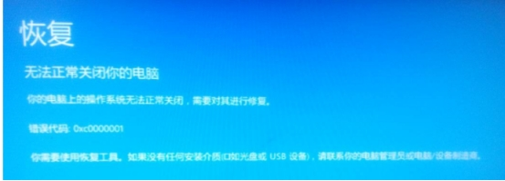
③ 闪退型蓝屏，一闪而过，无法看清报错信息
原因分析：
①上一次开机安装的驱动，补丁等不兼容，或异常断电
② 内存不兼容
③ 系统崩溃
解决方法：
关机后拔掉内存，擦拭金手指后插回。如未解决，还原系统。如果还未解决，送修，更换内存。
花屏问题
现象描述：
运行中花屏，或开机花屏，闪屏
原因分析：
线缆/显示器/电磁干扰(闪屏或花屏后可恢复)/显示模块故障
解决方法：
依次更换线缆，显示器。如果依旧花屏，检查显示线缆附近的供电线。如果确认没问题，显示模块故障。送修
BIOS问题
来电自启
现象描述：
上电后视觉控制器不启动，按开机键后才能正常启动
原因分析：
BIOS来电自启动未设置
解决方法：
参考常用快捷键、命令及工具/2常用工具及设置/2 BIOS/来电自启动选项
硬盘启动项
参考常用快捷键、命令及工具/2常用工具及设置/2 BIOS/硬盘启动选项
BIOS信息错乱
现象描述：
BIOS设置被更改，乱码。
原因分析：
一般出现在客户自行更改了BIOS设置或CMOS故障。
解决方法：
清CMOS，扣电池后装回，DOS系统下刷CMOS固件。
风扇类问题
风扇不转
现象描述：
开机后风扇不转或运行一段时间后视觉控制器过热重启
原因分析：
风扇故障或散热硅脂太少/太干
解决方法：
更换风扇，添加硅脂，或返修(参考视觉控制器位置组成及图示/1. 控制盒 VC5100 & VC7100/CPU)
风扇全速转
现象描述：
开机后风扇一直全速转不降速，黑屏
原因分析：
主板卡自检
解决方法：
重新拆装CPU和内存，如无法解决，清CMOS后开机，有概率恢复正常，如果依旧如此，主板接口模块故障，送修。
报警类问题
滴….滴滴滴
正常开机音
滴…. 滴..滴..滴..
内存报错，重新插拔或更换内存
滴..滴..滴..滴..滴..
CPU报错，重新安装或更换CPU
滴..滴..滴..滴..滴..滴..滴..滴..
显卡报错，重新插拔显卡及供电
自动重启或卡死类问题
解决方法：
参考 2. 无法进系统问题
硬盘类问题
现象描述：
HDD灯常亮，但硬盘无法识别
原因分析：
硬盘坏道，尤其映射区坏道
解决方法：
更换硬盘
系统卡顿问题
现象描述：
系统卡顿，鼠标移动时不连贯，点击反应异常的慢，或工程运行时点击导致的软件未响应或崩溃
观察：
任务管理器中CPU、内存、硬盘、网络的资源占用率，对较高的项，观察是什么进程引起的资源占用过高。如果都不高，怀疑是病毒问题。
原因分析：
超出视觉控制器能力的工程应用，客户软件，病毒，系统故障
解决方法：
CPU过高时：优化工程或提升视觉控制器处理能力，客户软件升级，安装杀毒软件，并反馈病毒种类。还原系统。
内存过高时：内存溢出(软件升级)，安装杀毒软件，并反馈病毒种类。还原系统。
硬盘过高时：评估存图量及队列情况，反馈。可临时更换硬盘解决。
崩溃问题
现象描述：
桌面点击没反应，软件崩溃，桌面卡死等
解决方法：
按Win+D看是否能切回桌面，判断是界面软件卡死还是桌面卡死。如果不能切回，按Ctrl+Alt+Del看是否能切出桌面，切出后点击任务管理器，并结束未响应的进程。收集应用日志、系统日志及软件dump文件并反馈。
病毒类问题
现象描述：
软件崩溃，工具超时，系统卡顿，自动重启，蓝屏，最直观的现象为杀软拦截的病毒攻击
解决方法：
安装火绒杀毒软件，观察攻击的病毒类型。重装系统后安装windows6.1-kb4012212及windows6.1-kb4012215补丁，安装火绒杀毒软件后关闭445端口(有工具)，都完成后在连网线。
相机类问题
双相机帧率达不到，一直丢包
现象描述：
双相机帧率达不到，一直丢包，客户自选的视觉控制器，经排查现场视觉控制器PCIe x8的槽位实际信号带宽只有PCIe x1，带宽不满足PCIe x4 更换槽位后正常。
超时问题(驱动部分)
现象描述：
相机抓图偶尔超时
解决方法：
安装相机环境检测工具，查看抓图是否走的是socket协议。
卸载LBAS驱动后重新安装，看是否会出现数字签名报错。
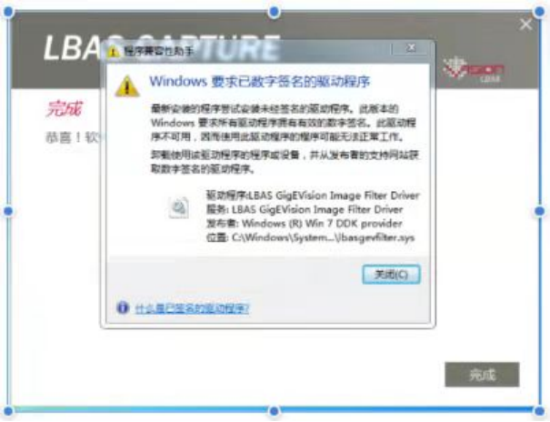
安装补丁Windows6.1-KB3033929-x64后重新安装。
如果依旧报错，重启后不断按F8，选择金融驱动程序签名强制后，再次进行安装。
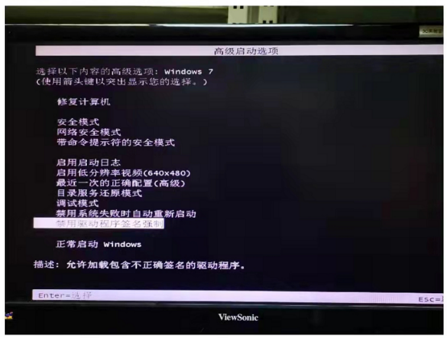
显卡问题
驱动无法安装
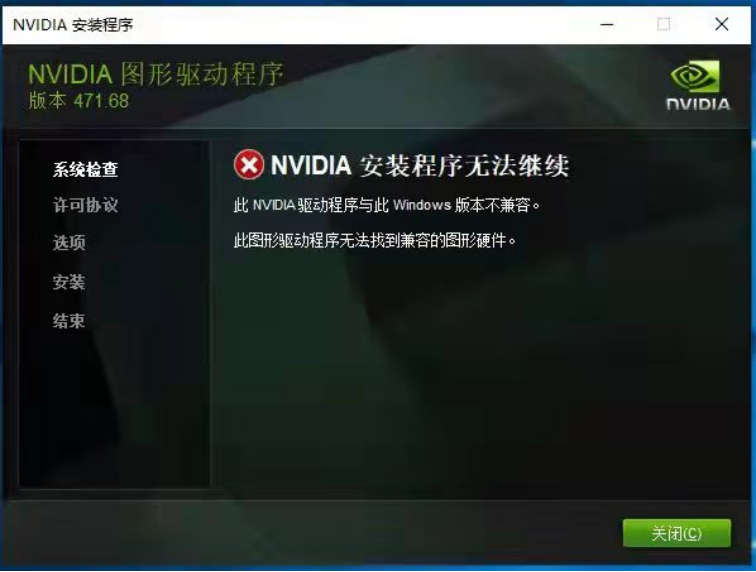
现象描述：
设备管理器中找不到显卡
解决方法：
右键点击计算机-属性，选择设备管理器，找到显示适配器，看是否能找到显卡。如果找不到，关机后检查显卡风扇是否转，以及显卡供电是否插好。
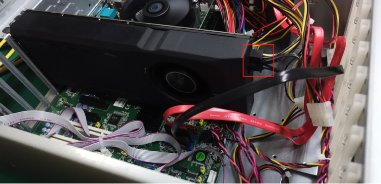
现象描述：
系统中能找到显卡
按Win+R，输入dxdiag，回车。
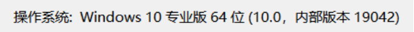
检查系统小版本是否在17134及以上。如果不是，需要重装新的系统。对应的最低版本为1803系统版本，我们常用的为win10 企业版 1809 长服务周期版系统。
开机黑屏，但感觉开机状态正常
当视觉控制器上有显卡时，会默认从显卡的显示接口输出。左侧的显示口会无效。检查是否插错了显示接口。
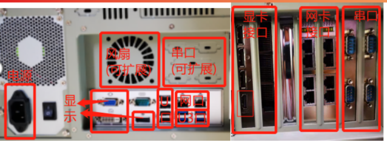
USB问题
现象描述：
键鼠或U盘连接后无法使用，或使用时突然无法使用
解决方法：
安装D盘-驱动路径下的USB驱动，如果还无法解决，判断是U3芯片故障，送修。